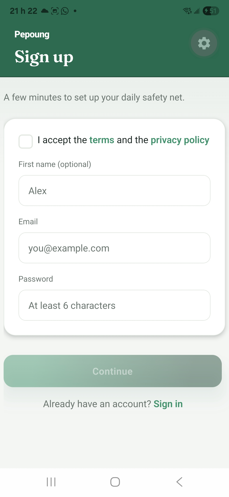
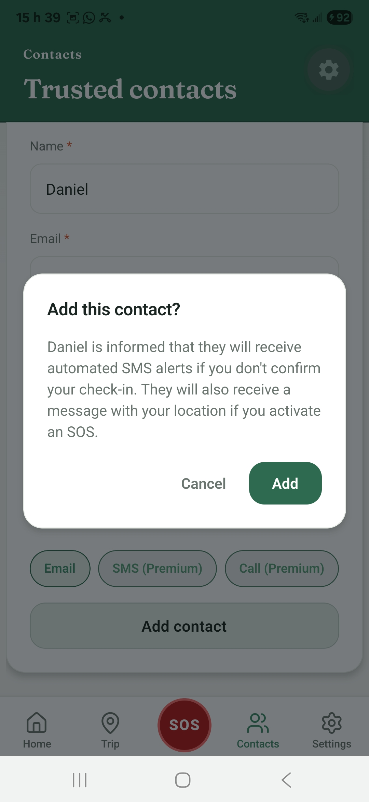
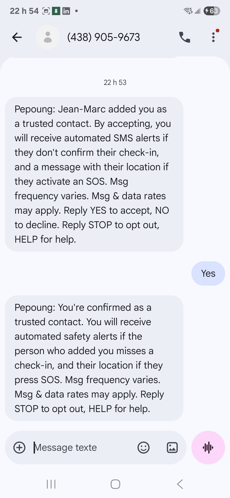

SMS consent and opt-in workflow
How trusted contacts consent to receive SMS
Pepoung is a mobile app for daily safety check-ins. Each day, the account holder confirms in the app that they are fine; reminders to the account holder are push notifications inside the app, not SMS. If they do not confirm, the app alerts the trusted contacts they chose. Text messages are sent only to those trusted contacts, and only after the contact has opted in by replying YES.
Consent to receive SMS is not a condition of using Pepoung or creating an account. The same invitation and alerts can also be delivered by email, which is separate from this SMS program.
Step 1: the account holder creates an account
The account holder cannot create an account until they tick an unchecked box accepting the Terms and the Privacy Policy, whose links are on the same screen. This box accepts the legal documents only. It is not consent to receive text messages, which are sent only to trusted contacts, and only after they opt in.

Step 2: the account holder adds a trusted contact
The account holder enters the contact's name and mobile number. Before the contact is saved, the app shows a confirmation screen with this text:
[Name] will receive automated SMS alerts if you don't confirm your check-in. They will also receive a message with your location if you activate an SOS.

Step 3: Pepoung sends one invitation SMS
The trusted contact receives a single invitation text message. It names the app, explains what the contact would receive, and gives the frequency, the rates notice and the STOP and HELP instructions.
Pepoung: [Name] added you as a trusted contact. By accepting, you will receive automated SMS alerts if they don't confirm their check-in, and a message with their location if they activate an SOS. Msg frequency varies. Msg & data rates may apply. Reply YES to accept, NO to decline. Reply STOP to opt out, HELP for help.
Step 4: the contact opts in by replying YES
The contact opts in by replying YES (or OUI in French) to the number that sent the invitation, +1 438-905-9673. Nothing else is sent before that reply. If the contact replies NO, or does not reply, the process stops and no further text message is sent.
Step 5: confirmation message
Pepoung: You're confirmed as a trusted contact. You will receive automated safety alerts if the person who added you misses a check-in, and their location if they press SOS. Msg frequency varies. Msg & data rates may apply. Reply STOP to opt out, HELP for help.

Alert messages after opt-in
Only safety alerts are sent: no marketing and no promotions. A missed check-in alert does not include a location. An SOS alert includes the location of the account holder.
Opting out and help
A trusted contact can reply STOP at any time to stop receiving text messages from Pepoung, and HELP for assistance. The account holder can also remove the contact at any time in the app. Message frequency varies. Message and data rates may apply. Mobile information is not shared with third parties or affiliates for marketing or promotional purposes.
Consentement aux SMS et parcours d'inscription
Comment les contacts de confiance consentent à recevoir des SMS
Pepoung est une application mobile de check-in quotidien pour la sécurité. Chaque jour, le titulaire du compte confirme dans l'app qu'il va bien ; ses rappels sont des notifications push dans l'app, pas des SMS. S'il ne confirme pas, l'app alerte les contacts de confiance qu'il a choisis. Des messages texte ne sont envoyés qu'à ces contacts, et seulement après qu'ils ont donné leur consentement en répondant OUI.
Le consentement à recevoir des SMS n'est pas une condition pour utiliser Pepoung ni pour créer un compte. La même invitation et les mêmes alertes peuvent aussi être envoyées par email, ce qui est distinct de ce programme SMS.
Étape 1 : le titulaire crée un compte
Le titulaire ne peut pas créer son compte sans cocher une case, décochée par défaut, qui accepte les Conditions et la Politique de confidentialité, dont les liens sont sur le même écran. Cette case accepte seulement les documents légaux. Ce n'est pas un consentement à recevoir des messages texte, qui sont envoyés uniquement aux contacts de confiance, et seulement après leur consentement.
Étape 2 : le titulaire ajoute un contact de confiance
Le titulaire saisit le nom et le numéro de mobile du contact. Avant l'enregistrement, l'app affiche un écran de confirmation avec ce texte :
[Nom] recevra des alertes SMS automatisées si tu ne confirmes pas ton check-in. [Nom] recevra aussi un message avec ta position si tu actives un SOS.
Étape 3 : Pepoung envoie un seul SMS d'invitation
Le contact de confiance reçoit un seul SMS d'invitation. Il nomme l'app, explique ce que le contact recevrait, et indique la fréquence, la mention des frais et les instructions STOP et HELP.
Pepoung : [Nom] t'a ajouté(e) comme contact de confiance. En acceptant, tu recevras des alertes SMS automatisées si cette personne ne confirme pas son check-in, et un message avec sa position si elle active un SOS. La fréquence varie. Des frais de messagerie et de données peuvent s'appliquer. Réponds OUI pour accepter, NON pour refuser. Réponds STOP pour te désabonner, HELP pour de l'aide.
Étape 4 : le contact consent en répondant OUI
Le contact consent en répondant OUI (ou YES) au numéro qui a envoyé l'invitation, le +1 438-905-9673. Rien d'autre n'est envoyé avant cette réponse. S'il répond NON, ou ne répond pas, le processus s'arrête et aucun autre message texte n'est envoyé.
Étape 5 : message de confirmation
Pepoung : tu es confirmé(e) comme contact de confiance. Tu recevras des alertes de sécurité automatisées si la personne qui t'a ajouté(e) manque un check-in, et sa position si elle appuie sur SOS. La fréquence varie. Des frais de messagerie et de données peuvent s'appliquer. Réponds STOP pour te désabonner, HELP pour de l'aide.
Messages d'alerte après le consentement
Seules des alertes de sécurité sont envoyées : aucun message promotionnel. Une alerte de check-in manqué ne contient pas de position. Une alerte SOS contient la position du titulaire du compte.
Désabonnement et aide
Un contact de confiance peut répondre STOP à tout moment pour ne plus recevoir de messages texte de Pepoung, et HELP pour obtenir de l'aide. Le titulaire peut aussi retirer le contact à tout moment dans l'app. La fréquence des messages varie. Des frais de messagerie et de données peuvent s'appliquer. Les informations mobiles ne sont pas partagées avec des tiers ni des sociétés affiliées à des fins de marketing ou de promotion.